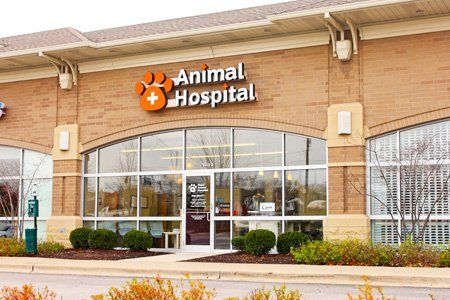

Innocent Souls Veterinary Hospital opened in 1963 and its practice has been part of the Veterinary Community for 50+ years. Innocent Souls Veterinary Hospital and Care Centre came to be because of the pioneering veterinary spirit and vision of three outstanding and compassionate women. Their goals and mission were to offer medical care for dogs, cats, horses, dairy and beef cattle, goats and sheep, pets or stray. Serving Bengaluru region as a full-service mixed-animal practice, it is now one of the largest multi-species veterinary practices in India
| City | Area | Contact No. |
| New Delhi | Greater Kailash | 9456738299 |
| Bangalore | Indiranagar | 8768935426 |
| Mumbai | Juhu West | 7658987678 |
| Kolkata | Park Street | 9876898789 |
ISVHCC believes that animals deserve respect too. Like us, they too are entitled to the right of life, liberty, and the pursuit of happiness. As the planet's inhabitants, and as inseparable companions to us, they deserve our strongest support.
ISVHCC mission is to provide sick, wounded, and abandoned animals food, shelter, medication, kindness, safety, and care, for as long as they need it.